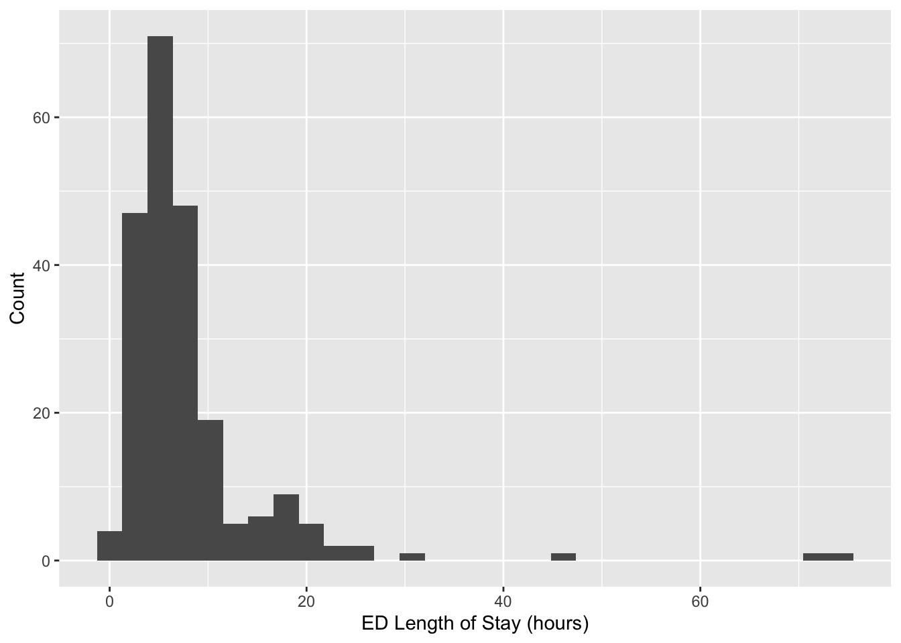

library(tidyverse) # data wrangling and visualization
library(knitr) # format output
library(rstan) # Stan
library(bayesplot) # figures for post Stan inference
library(loo) # model comparisonAE 06: Classification
Exploring MIMIC-IV-ED Demo Datasets
ImportantDue date
Application exercises (AEs) are submitted by pushing your work to the relevant GitHub repo. AEs from Tuesday lectures should be submitted by Friday by 11:59pm ET, and AEs from Thursday lectures should be submitted by Sunday at 11:59pm ET. Because AEs are intended for in-class activities, there are no extensions given on AEs.
This AE spans the lectures on February 17 and 19, so this is considered a Thursday AE!
- Final
.qmdand.pdffiles pushed to your GitHub repo - Note: For homeworks and exams, you will also be required to submit your final
.pdffile submitted on Gradescope
Getting Started
Clone the repo & start new RStudio project
- Go to the course organization at github.com/biostat725-sp26 organization on GitHub.
- Click on the repo with the prefix ae-06-. It contains the starter documents you need to complete the AE.
- Click on the green CODE button, select Use SSH (this might already be selected by default, and if it is, you’ll see the text Clone with SSH). Click on the clipboard icon to copy the repo URL.
- See the HW 00 instructions if you have not set up the SSH key or configured git.
- In RStudio, go to File \(\rightarrow\) New Project \(\rightarrow\) Version Control \(\rightarrow\) Git.
- Copy and paste the URL of your assignment repo into the dialog box Repository URL. Again, please make sure to have SSH highlighted under Clone when you copy the address.
- Click Create Project, and the files from your GitHub repo will be displayed in the Files pane in RStudio.
- Click
ae-06.qmdto open the template Quarto file. This is where you will write up your code and narrative for the AE.
R packages
We will begin by loading R packages that we will use in this AE.
Data
MIMIC-IV Emergency Department (ED) Data
The MIMIC-IV-ED database, which includes over 400,000 emergency department (ED) admissions to the Beth Israel Deaconess Medical Center between 2011 and 2019. We will use the MIMIC-IV-ED demo dataset, which is an educational version containing data for only 100 patients, making it a perfect tool for exploring electronic health records (EHR) and learning how to analyze real-world clinical data.
About MIMIC-IV-ED
The MIMIC-IV-ED dataset is a large, publicly accessible resource intended to facilitate data analysis and research in emergency care. The demo dataset maintains the same structure as the original MIMIC-IV-ED, but with the protected health information (PHI) removed to ensure deidentification and privacy.
Dataset Access and Ethics
Access to the full MIMIC-IV-ED dataset requires registration, identity verification, completion of human participant training, and a signed data use agreement via PhysioNet. However, this demo dataset is publicly available, so you can start exploring it right away!
The project has been approved by the Institutional Review Boards (IRBs) of Beth Israel Deaconess Medical Center and the Massachusetts Institute of Technology (MIT), and all patient data is deidentified in compliance with HIPAA regulations.
What is EHR Data?
Electronic Health Records (EHR) Overview
EHR data refers to digital records of a patient’s medical history, typically collected during healthcare encounters such as doctor visits, hospital stays, and emergency department admissions. This data is real-world data that is collected during routine medical care, and it is used by healthcare providers to manage patient care, track diagnoses, and prescribe treatments.
EHRs are made up of a variety of information, such as:
Demographics: Information about the patient, including age, gender, and race.
Clinical Data: Diagnoses, medications, lab test results, and other medical conditions.
Vitals: Measurements of important bodily functions, such as heart rate, blood pressure, and temperature.
Procedures: Records of surgeries, imaging tests, and other medical interventions.
Billing and Insurance Information: Data related to how healthcare services are paid for.
EHR data is crucial in modern healthcare, enabling both providers and researchers to track health outcomes, improve care quality, and conduct studies on medical practices and disease progression.
EHR Data in the Context of MIMIC-IV-ED
The MIMIC-IV-ED dataset is an example of EHR data, specifically from emergency department (ED) visits. It contains a wide variety of patient-related information, from demographics to vital signs, to medications and diagnostic codes. By analyzing this type of data, researchers can identify patterns, predict outcomes, and improve healthcare delivery.
However, it’s important to understand that EHR data is far from perfect. Here are a few challenges and considerations when working with this type of data:
Challenges of EHR Data
1. Biases in Data Collection
EHR data reflects the way care is actually provided in the real world, meaning it can carry systematic biases. For example:
Sociodemographic Bias: Certain groups of people (e.g., those from lower socioeconomic backgrounds) may experience different levels of access to healthcare, leading to underrepresentation of these groups in the data.
Provider Bias: Clinicians may make diagnostic or treatment decisions that are influenced by their experiences, leading to biases in how certain conditions are treated or recorded.
Selection Bias: Only patients who visit the ED are included in the dataset. This excludes people who might have similar health conditions but do not seek emergency care.
2. Missing Data
Since EHR data is collected during routine medical care, it often contains missing data. Some reasons for missing data include:
Incomplete records: Not every patient will have all the data points recorded. For example, certain tests or treatments may not be administered to every patient.
Variable documentation: Different providers may record information inconsistently or leave fields blank.
Patient noncompliance: Some patients might not provide full information during visits, leading to gaps in the data.
Handling missing data is a key challenge when working with EHR data, and it can impact the accuracy of any analysis performed.
3. Data Quality and Inconsistencies
EHR data is typically entered manually by clinicians or extracted from various systems. As a result, there may be data quality issues such as:
Typos or errors in data entry (e.g., incorrect medication dosages).
Inconsistencies across systems, especially when data is pulled from multiple healthcare organizations or devices.
Coding errors: Diagnoses and procedures are often coded using standard systems like ICD codes, which can sometimes be misapplied.
Analyzing EHR Data
While these challenges can make EHR data more complex to work with, they also present opportunities for learning and improvement. By using appropriate methods, researchers can account for biases and missingness, and still gain valuable insights from the data.
In the case of the MIMIC-IV-ED dataset, these challenges are present, but the data is carefully deidentified and has been cleaned for use in research and education. It’s important to acknowledge these limitations and use statistical techniques to account for them when analyzing the data.
Structure of the MIMIC-IV-ED Demo Dataset
EHR data is a relational database, which means the data is organized into tables that are linked by common identifiers (in this case, subject_id). Here’s an overview of the key tables in the dataset:
edstays: A patient tracking table that includes the unique ID for each patient visit.
diagnosis: Contains diagnostic codes and descriptions for each ED visit.
medrecon: Records the medications administered during the patient’s ED visit.
pyxis: Provides information on the medications dispensed from the hospital’s automated medication dispensing system.
triage: Contains triage data, which includes the assessment of patients when they first arrive in the ED.
vitalsign: Includes measurements of vital signs taken during the visit, such as heart rate, blood pressure, and temperature.
Each table is designed to capture different aspects of the patient’s visit to the ED, giving you the ability to explore patient demographics, diagnoses, treatments, and outcomes.
MIMIC-IV-ED Demo: Exploring Key Datasets
In this course, we will work most with the edstays and triage datasets. The edstays dataset contains important information, including the start and end time of the ED encounter, demographics (including gender and race), the mode of arrival, and importantly the discharge disposition. Discharge disposition is a critical outcome for ED encounters that indicates how a patient left the encounter and can include, among others, going home, being admitted to the hospital.
edstays <- read_csv("mimic_ed/edstays.csv")When a patient enters the ED, they are triaged, meaning a medical professional will quickly assess their condition to determine the severity of their illness or injury and prioritize them in line for treatment based on how urgently they need care, essentially sorting patients based on their need for immediate attention; the most critical cases will be seen first. The data in the triage dataset comes from this process and includes vital measurements, including, among others, temperature, oxygen saturation, and pain; an assessment of acuity, and also a chief complaint variable. Vitals in the triage dataset are different from those in the vitals dataset, which are collected during the ED stay and are time stamped.
triage <- read_csv("mimic_ed/triage.csv")Data is Messy: Race
Working with any real-world data is messy and requires substantial data processing. To illustrate this, let’s consider the variable race from the edstays dataset.
| Category | n |
|---|---|
| WHITE | 138 |
| BLACK/AFRICAN AMERICAN | 46 |
| HISPANIC/LATINO - CUBAN | 11 |
| PORTUGUESE | 9 |
| UNKNOWN | 6 |
| WHITE - BRAZILIAN | 3 |
| HISPANIC/LATINO - SALVADORAN | 3 |
| OTHER | 2 |
| WHITE - OTHER EUROPEAN | 1 |
| UNABLE TO OBTAIN | 1 |
| PATIENT DECLINED TO ANSWER | 1 |
| MULTIPLE RACE/ETHNICITY | 1 |
There are 12 categories of race in only 100 patients. Imagine what this would look like in 400,000 patients and with racial categories changing over time! When working with EHR data, variables should be processed into forms that are appropriate for the research question. Typically this means grouping categorical variables like race into meaningful categories. The following is an example.
edstays <- edstays %>%
mutate(race2 = case_when(
race == "BLACK/AFRICAN AMERICAN" ~ "black",
race == "WHITE - BRAZILIAN" ~ "white",
race == "WHITE - OTHER EUROPEAN" ~ "white",
race == "WHITE" ~ "white",
race == "UNKNOWN" ~ "other",
race == "UNABLE TO OBTAIN" ~ "other",
race == "PATIENT DECLINED TO ANSWER" ~ "other",
race == "OTHER" ~ "other",
race == "PORTUGUESE" ~ "other",
race == "MULTIPLE RACE/ETHNICITY" ~ "other",
race == "HISPANIC/LATINO - SALVADORAN" ~ "other",
race == "HISPANIC/LATINO - CUBAN" ~ "other",
TRUE ~ NA_character_ # handles any other cases that don't match
)) %>%
mutate(race2 = relevel(factor(race2), ref = "white"))This yields the following categories.
| Category | n |
|---|---|
| white | 142 |
| black | 46 |
| other | 34 |
Data is Messy: ED Length of Stay
Another example of data processing in EHR data is computing ED length of stay. Length of stay is a critical outcome in healthcare applications and can be computed as the time of admission to discharge. In real-world datasets this is not pre-computed, but must be derived from date-time variables. We first check to see if the admission and discharge times are date-time data objects.
class(edstays$outtime)[1] "POSIXct" "POSIXt" class(edstays$intime)[1] "POSIXct" "POSIXt" If they are not, they can be converted.
edstays$outtime <- as.POSIXct(edstays$outtime)
edstays$intime <- as.POSIXct(edstays$intime)We can then compute the length of stay by computing the time differences. It is important to specify the units of time for consistency. We then convert to a numeric and visualize.
edstays$los <- difftime(as.POSIXct(edstays$outtime), as.POSIXct(edstays$intime), units = "hours")
edstays$los <- as.numeric(edstays$los)
ggplot(edstays, aes(x = los)) +
geom_histogram() +
labs(x = "ED Length of Stay (hours)",
y = "Count")
AE Data
Today, we will focus on the following variables which we derived above.
los: ED length of stay in hours.race2: categorical race variable with three groupswhite,black,other.
We will demonstrate classification by creating three outcome variables. For logistic regression we will define a binary outcome, where a success is defined as a length of stay greater than 6 hours.
edstays <- edstays %>%
mutate(binary = 1 * (los > 6))
table(edstays$binary)
0 1
114 108 For multinomial regression, we define a categorical representation of length of stay based on the following three categories.
edstays <- edstays %>%
mutate(nominal = case_when(
los < 6 ~ "short",
(los < 12 & los >= 6) ~ "medium",
los >= 12 ~ "long",
TRUE ~ NA_character_)) %>%
mutate(nominal = factor(nominal, levels = c("short", "medium", "long")),)
table(edstays$nominal)
short medium long
114 77 31 For multinomial regression, we define a categorical representation of length of stay based on the following three categories.
edstays <- edstays %>%
mutate(ordinal = factor(nominal, ordered = TRUE))The complete code to obtain the analysis dataset for today’s AE is as follows.
edstays <- read_csv("mimic_ed/edstays.csv")
edstays <- edstays %>%
mutate(
race2 = case_when(
race == "BLACK/AFRICAN AMERICAN" ~ "black",
race == "WHITE - BRAZILIAN" ~ "white",
race == "WHITE - OTHER EUROPEAN" ~ "white",
race == "WHITE" ~ "white",
race == "UNKNOWN" ~ "other",
race == "UNABLE TO OBTAIN" ~ "other",
race == "PATIENT DECLINED TO ANSWER" ~ "other",
race == "OTHER" ~ "other",
race == "PORTUGUESE" ~ "other",
race == "MULTIPLE RACE/ETHNICITY" ~ "other",
race == "HISPANIC/LATINO - SALVADORAN" ~ "other",
race == "HISPANIC/LATINO - CUBAN" ~ "other",
TRUE ~ NA_character_), # handles any other cases that don't match
los = as.numeric(difftime(as.POSIXct(outtime), as.POSIXct(intime), units = "hours")),
binary = 1 * (los > 6),
nominal = case_when(
los < 6 ~ "short",
(los < 12 & los >= 6) ~ "medium",
los >= 12 ~ "long",
TRUE ~ NA_character_)
) %>%
mutate(race2 = relevel(factor(race2), ref = "white"),
nominal = factor(nominal, levels = c("short", "medium", "long")),
ordinal = factor(nominal, ordered = TRUE))
dat_ae6 <- edstays[, c("binary", "nominal", "ordinal", "race2")]
glimpse(dat_ae6)Rows: 222
Columns: 4
$ binary <dbl> 0, 0, 1, 0, 0, 0, 0, 0, 0, 1, 0, 0, 0, 1, 0, 0, 0, 0, 0, 0, 1,…
$ nominal <fct> short, short, medium, short, short, short, short, short, short…
$ ordinal <ord> short, short, medium, short, short, short, short, short, short…
$ race2 <fct> white, white, white, white, white, other, other, other, white,…Exercises
Exercise 1
Fit the logistic regression model: \[\begin{align*} Y_i &\stackrel{ind}{\sim} \text{Bernoulli}(\pi_i)\\ \text{logit}(\pi_i) &= \alpha + \mathbf{x}_i\boldsymbol{\beta}, \end{align*}\] where \(Y_i\) is the binary indicator for a length of stay being greater than 6 hours and \(\mathbf{x}_i = (black_i, other_i)\) contains the covariates for race, with white as the reference category. Place weakly-informative priors. Evaluate model convergence, check model fit with posterior predictive checks. Present the posterior mean and 95% credible interval for the odds ratio for black race.
Answer:
# add code hereExercise 2
Fit the additive log ratio regression model for \(Y_i \in \{1,\ldots,K\}\) for \(i = 1,\ldots,n\), \[\log \left(\frac{P(Y_i = k)}{P(Y_i = K)} \right)= \mathbf{x}_i \boldsymbol{\beta}_k, \quad k \in \{1,\ldots, K-1\},\] where \(K\) is chosen as reference. Place weakly-informative priors. Evaluate model convergence, check model fit with posterior predictive checks. Present the posterior mean and 95% credible interval for the odds ratio for black race.
Answer:
# add code hereExercise 3
Fit the proportional odds regression model for ordinal \(Y_i \in \{1,\ldots,K\}\) for \(i = 1,\ldots,n\), \[\log \frac{P(Y_i\leq k)}{P(Y_i > k)} = \text{logit}P(Y_i\leq k) = \alpha_k - \mathbf{x}_i \boldsymbol{\beta}.\] Place weakly-informative priors. Evaluate model convergence, check model fit with posterior predictive checks. Present the posterior mean and 95% credible interval for the odds ratio for black race.
Answer:
# add code here
Important
To submit the AE:
- Render the document to produce the PDF with all of your work from today’s class.
- Push all your work to your AE repo on GitHub. You’re done! 🎉